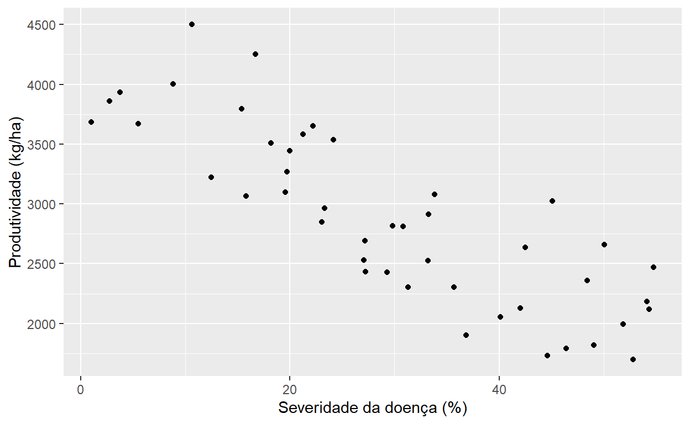
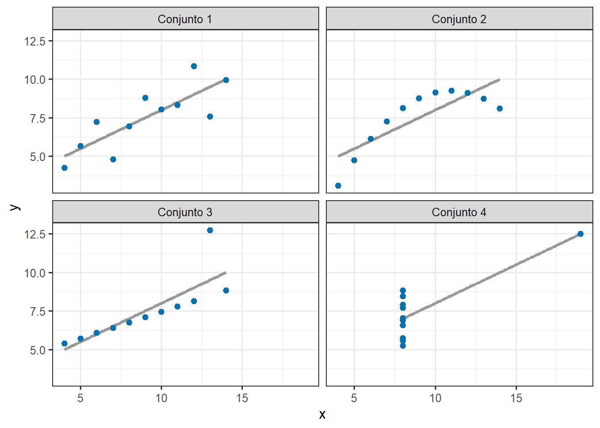
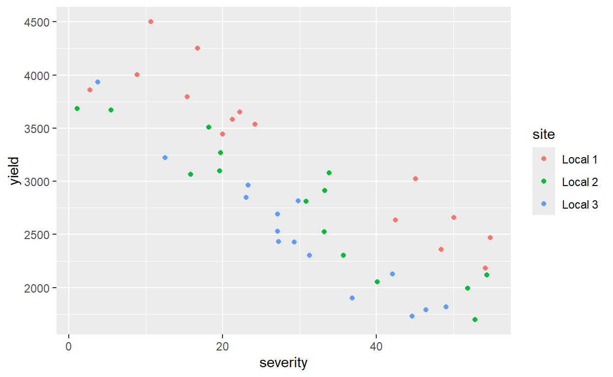
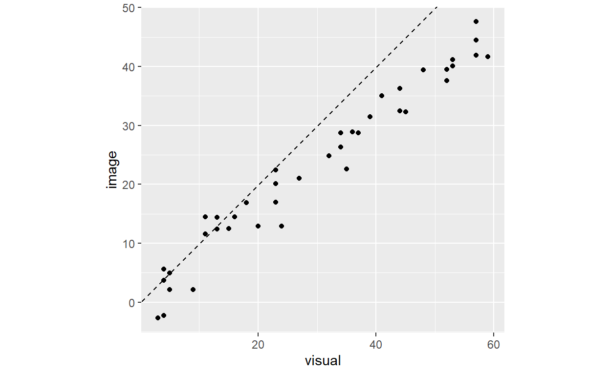
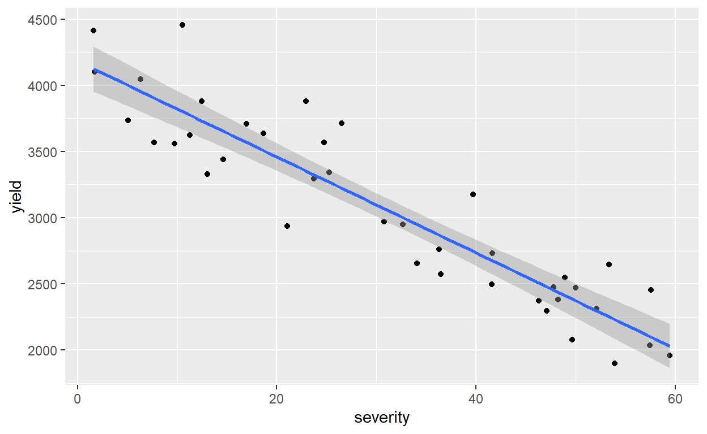
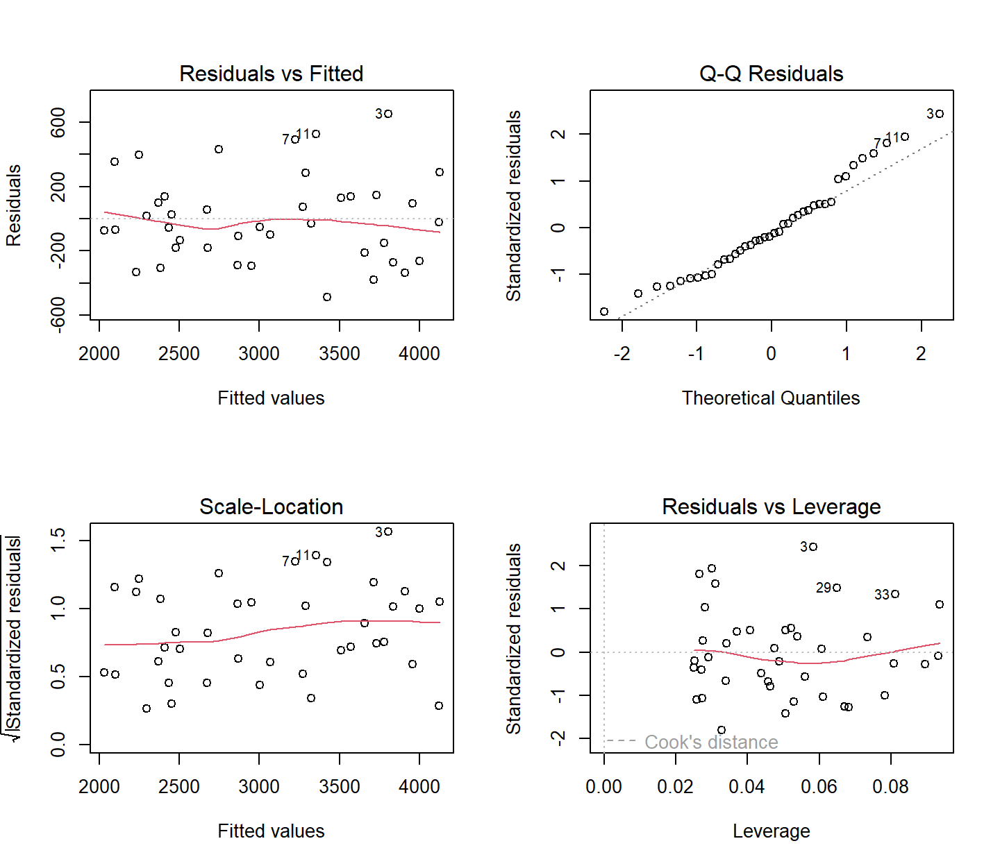
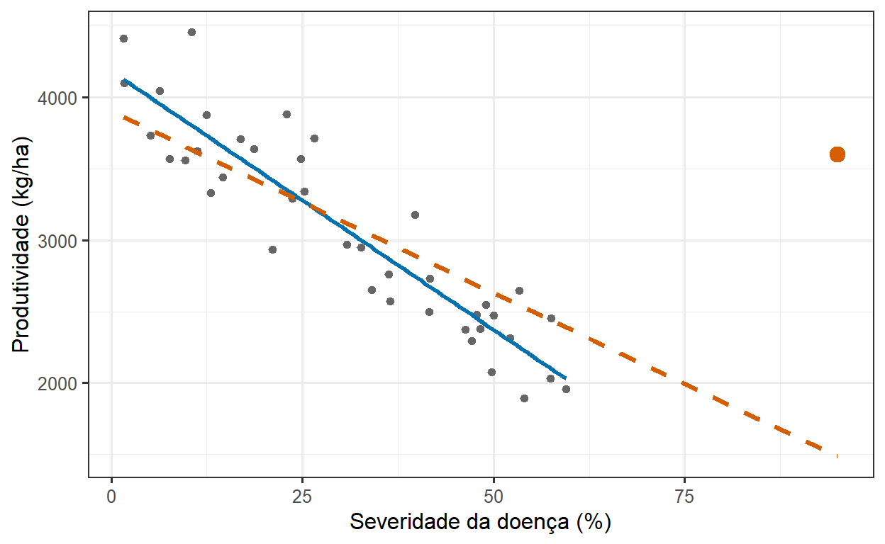
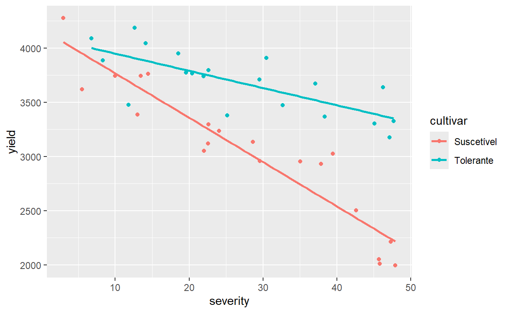

8 Como estudamos relações entre variáveis?
8.1 Objetivos de aprendizagem
Importante
Ao concluir este capítulo, o leitor deverá ser capaz de:
- identificar questões de pesquisa que envolvem relações entre variáveis quantitativas;
- explorar relações graficamente antes de ajustar um modelo;
- distinguir associação de causalidade;
- estimar e interpretar coeficientes de correlação e reconhecer suas limitações;
- distinguir correlação de concordância entre dois métodos de medida;
- formular um modelo de regressão linear simples e interpretar seu intercepto e sua inclinação em unidades biológicas;
- quantificar a incerteza das estimativas da regressão e distinguir intervalos de confiança de intervalos de predição;
- interpretar o coeficiente de determinação sem superestimá-lo;
- diagnosticar modelos de regressão, incluindo observações influentes;
- comparar relações entre grupos combinando preditores quantitativos e categóricos;
- ajustar e interpretar modelos de regressão linear múltipla;
- reconhecer colinearidade, extrapolação e outras ameaças à interpretação;
- comunicar resultados de regressão usando estimativas, incerteza e gráficos adequados.
8.2 Por que estudar relações?
O Capítulo 7 tratou de questões em que a variável explicativa define grupos: tratado versus não tratado, resistente versus suscetível, inoculado versus não inoculado. Muitas questões em Fitopatologia, porém, envolvem variáveis explicativas que são, elas próprias, quantitativas.
Questões típicas incluem:
- Quanto de produtividade se perde para cada unidade de aumento na severidade da doença?
- O tamanho da lesão aumenta com a temperatura?
- Como o número de esporos capturados se relaciona com a incidência posterior da doença?
- A infecção aumenta com a duração do molhamento foliar?
- As estimativas de severidade obtidas por análise de imagens correspondem às estimativas visuais?
- A biomassa do patógeno no tecido está associada à severidade dos sintomas?
Essas questões compartilham uma estrutura comum: queremos descrever como uma resposta muda à medida que outra variável quantitativa muda, e com que confiança podemos descrever essa mudança.
Importante
A grandeza central na maioria dos estudos de relações não é um valor-P nem um coeficiente de correlação, mas a taxa de variação da resposta em relação à variável explicativa, expressa em unidades biológicas e acompanhada de sua incerteza.
8.3 Da questão biológica à relação
Considere um estudo de campo que relaciona a severidade da doença em um estádio-chave da cultura à produtividade final.
8.3.1 Qual é o estimando?
Se a produtividade média varia linearmente com a severidade, podemos escrever a produtividade esperada na severidade \(x\) como:
\[ E(Y \mid x) = \beta_0 + \beta_1 x \]
O estimando de interesse principal geralmente é a inclinação:
\[ \beta_1 = \text{variação da produtividade média por unidade de aumento na severidade} \]
A estimativa correspondente obtida dos dados é \(\hat{\beta}_1\).
Dica
Uma inclinação sempre tem unidades: unidades da resposta por unidade da variável explicativa. “A inclinação foi −42” é incompleto; “a produtividade diminuiu 42 kg/ha para cada ponto percentual de severidade” é interpretável.
8.3.2 Qual variável é a resposta?
Em um modelo de regressão, a escolha da resposta e da variável explicativa não é arbitrária. Ela decorre da questão biológica:
- a resposta é a variável cujo comportamento queremos explicar ou prever;
- a variável explicativa é a variável que usamos para explicá-la ou prevê-la.
A produtividade é modelada em função da doença, e não o contrário, porque a questão é sobre a consequência da doença para a produtividade. Fazer a regressão de \(y\) em \(x\) e a de \(x\) em \(y\) geralmente produz retas diferentes e responde a perguntas diferentes.
8.4 Olhando os dados antes de ajustar uma reta
Como nos capítulos anteriores, a análise começa pelas observações, e não pelo modelo (ver Capítulos 4 e 5).
8.4.1 O gráfico de dispersão
O gráfico de dispersão é o gráfico básico para a relação entre duas variáveis quantitativas. Antes de ajustar qualquer modelo, examine nele:
- a direção da relação (crescente, decrescente, nenhuma);
- a forma da relação (linear, curva, um platô, um limiar);
- a intensidade da relação (quão próximos os pontos estão de uma tendência);
- a variabilidade que muda ao longo da variável explicativa;
- observações incomuns e possíveis erros de digitação;
- grupos ou agrupamentos que podem corresponder a locais, anos, cultivares ou experimentos.
library(ggplot2)
ggplot(data, aes(x = severity, y = yield)) +
geom_point() +
labs(x = "Severidade da doença (%)",
y = "Produtividade (kg/ha)")
8.4.2 Por que os resumos sozinhos são insuficientes
Relações muito diferentes podem produzir as mesmas médias, desvios padrão, coeficiente de correlação e reta de regressão ajustada. A ilustração clássica é o quarteto de Anscombe: quatro conjuntos de dados com estatísticas-resumo praticamente idênticas, dos quais apenas um é bem descrito por uma reta.
# O quarteto de Anscombe está disponível no R base
sapply(1:4, function(i) {
x <- anscombe[[paste0("x", i)]]; y <- anscombe[[paste0("y", i)]]
round(c(media_y = mean(y), dp_y = sd(y), r = cor(x, y),
inclinacao = unname(coef(lm(y ~ x))[2])), 2)
}) [,1] [,2] [,3] [,4]
media_y 7.50 7.50 7.50 7.50
dp_y 2.03 2.03 2.03 2.03
r 0.82 0.82 0.82 0.82
inclinacao 0.50 0.50 0.50 0.50Os quatro conjuntos têm praticamente as mesmas médias, desvios padrão, correlações e inclinações, mas o gráfico mostra relações completamente diferentes:
quarteto <- data.frame(
conjunto = rep(paste("Conjunto", 1:4), each = 11),
x = unlist(anscombe[, 1:4]), y = unlist(anscombe[, 5:8])
)
ggplot(quarteto, aes(x, y)) +
geom_smooth(method = "lm", formula = y ~ x, se = FALSE, colour = "grey60") +
geom_point(colour = "#0072B2", size = 2) +
facet_wrap(~ conjunto) +
theme_bw(base_size = 12)
Aviso
Nunca ajuste nem relate uma correlação ou regressão sem olhar o gráfico de dispersão. Um número-resumo não revela curvaturas, valores discrepantes ou agrupamentos.
8.4.3 Mostre a estrutura dos dados
Os pontos de um gráfico de dispersão frequentemente não são independentes. As observações podem vir de várias lavouras, anos, cultivares ou de medidas repetidas nas mesmas plantas. Colorir ou separar em painéis os pontos segundo essas fontes frequentemente revela que uma relação aparente no conjunto é determinada por diferenças entre grupos, e não por uma relação dentro deles.
ggplot(data, aes(x = severity, y = yield, color = site)) +
geom_point()
8.5 Correlação
8.5.1 O que um coeficiente de correlação mede?
O coeficiente de correlação de Pearson, \(r\), mede a intensidade e a direção de uma associação linear entre duas variáveis quantitativas. Ele varia de −1 a 1:
- \(r\) próximo de 1: os pontos se agrupam em torno de uma reta crescente;
- \(r\) próximo de −1: os pontos se agrupam em torno de uma reta decrescente;
- \(r\) próximo de 0: ausência de associação linear (mas possivelmente uma forte associação não linear).
A correlação é simétrica: a correlação entre \(x\) e \(y\) é igual à correlação entre \(y\) e \(x\). Ela não tem unidades e não distingue resposta de variável explicativa.
cor.test(data$severity, data$yield)
Pearson's product-moment correlation
data: data$severity and data$yield
t = -9.9782, df = 43, p-value = 9.224e-13
alternative hypothesis: true correlation is not equal to 0
95 percent confidence interval:
-0.9067872 -0.7183787
sample estimates:
cor
-0.8356916 8.5.2 Correlação por postos
Quando a relação é monotônica, mas não linear, ou quando alguns valores extremos dominam, a correlação por postos de Spearman descreve a associação entre as posições (postos) das observações, e não entre seus valores.
cor.test(data$severity, data$yield, method = "spearman")
Spearman's rank correlation rho
data: data$severity and data$yield
S = 28162, p-value < 2.2e-16
alternative hypothesis: true rho is not equal to 0
sample estimates:
rho
-0.8552042 8.5.3 O que a correlação não nos diz
Um coeficiente de correlação não nos diz:
- quanto a resposta muda por unidade da variável explicativa;
- se a relação é causal;
- se a relação é linear (uma relação curva forte pode ter \(r\) próximo de 0);
- se um método de medida concorda com outro.
O valor de \(r\) também depende da amplitude da variável explicativa estudada. Amostrar apenas uma faixa estreita de severidade (por exemplo, um único local com pouca doença) produzirá uma correlação mais fraca do que amostrar uma faixa ampla, mesmo que a relação subjacente seja idêntica.
8.5.4 Correlação e causalidade
Estudos observacionais (Capítulo 2) frequentemente revelam associações: lavouras com mais inóculo têm mais doença, plantas com mais lesões produzem menos, regiões com mais chuva têm mais epidemias. Essas associações podem refletir relações causais, mas também podem surgir de variáveis de confundimento que afetam ambas as grandezas, como data de semeadura, cultivar, manejo ou solo.
Importante
Uma regressão ou correlação estimada a partir de dados observacionais descreve uma associação. A interpretação causal exige um delineamento experimental, ou uma argumentação cuidadosa de que as variáveis de confundimento foram medidas e consideradas.
8.5.5 Correlação versus concordância
Um uso comum da correlação em Fitopatologia é comparar dois métodos de medir a mesma grandeza, como estimativas visuais de severidade e estimativas por análise de imagens, ou estimativas de dois avaliadores.
Uma correlação alta não significa que os métodos concordam. Se um avaliador estima sistematicamente o dobro da severidade estimada pelo outro, suas estimativas são perfeitamente correlacionadas, mas sistematicamente diferentes.
A concordância exige que as observações caiam sobre a linha de igualdade (\(y = x\)), e não simplesmente sobre alguma reta. Medidas como o coeficiente de correlação de concordância de Lin e ferramentas gráficas como os gráficos de Bland–Altman avaliam diretamente a concordância.
ggplot(aval, aes(x = visual, y = image)) +
geom_point() +
geom_abline(intercept = 0, slope = 1, linetype = 2) +
coord_equal()
Aviso
Não use o coeficiente de correlação como evidência de que dois métodos de avaliação são intercambiáveis. Avalie o viés e a concordância em relação à linha de igualdade.
8.6 Regressão linear simples
8.6.1 O modelo
Um modelo de regressão linear simples descreve cada observação como:
\[ y_i = \beta_0 + \beta_1 x_i + \varepsilon_i \]
em que:
- \(y_i\) é a resposta da observação \(i\);
- \(x_i\) é o valor da variável explicativa;
- \(\beta_0\) é o intercepto, a resposta esperada quando \(x = 0\);
- \(\beta_1\) é a inclinação, a variação esperada da resposta para um aumento de uma unidade em \(x\);
- \(\varepsilon_i\) é a variação residual não explicada pela reta.
É o mesmo arcabouço de modelo linear usado no Capítulo 7. A única diferença é que a variável explicativa agora é quantitativa, e não um conjunto de grupos.
Importante
Comparar grupos e estudar relações não são mundos estatísticos separados. Ambos são modelos lineares; diferem apenas em se as variáveis explicativas são categóricas, quantitativas ou ambas.
8.6.2 Ajustando uma reta: mínimos quadrados
A reta ajustada é aquela que minimiza a soma dos quadrados das distâncias verticais entre as observações e a reta:
\[ \sum_i (y_i - \hat{y}_i)^2 \]
Essas distâncias verticais são os resíduos. Como as distâncias são medidas verticalmente, os mínimos quadrados tratam \(x\) como conhecido e atribuem toda a variação não explicada à resposta.
8.6.3 Um exemplo simples
O código a seguir simula um conjunto de dados de produtividade e severidade que o leitor pode reproduzir. Na prática, os dados viriam de um estudo de campo.
set.seed(606)
data <- data.frame(
severity = runif(40, min = 0, max = 60)
)
data$yield <- 4200 - 35 * data$severity + rnorm(40, sd = 250)model <- lm(yield ~ severity, data = data)
summary(model)
Call:
lm(formula = yield ~ severity, data = data)
Residuals:
Min 1Q Median 3Q Max
-486.3 -190.1 -41.8 136.2 653.1
Coefficients:
Estimate Std. Error t value Pr(>|t|)
(Intercept) 4183.98 87.82 47.64 <2e-16 ***
severity -36.22 2.46 -14.72 <2e-16 ***
---
Signif. codes: 0 '***' 0.001 '**' 0.01 '*' 0.05 '.' 0.1 ' ' 1
Residual standard error: 275.8 on 38 degrees of freedom
Multiple R-squared: 0.8509, Adjusted R-squared: 0.8469
F-statistic: 216.8 on 1 and 38 DF, p-value: < 2.2e-16confint(model) 2.5 % 97.5 %
(Intercept) 4006.1948 4361.77245
severity -41.2022 -31.241598.6.4 Interpretando o intercepto
O intercepto é a produtividade esperada quando a severidade é zero. Em um estudo de perda de produtividade, ele tem um significado claro: a produtividade atingível na ausência da doença, nas condições do estudo.
Em muitos outros casos, \(x = 0\) está muito fora dos dados observados (uma temperatura de 0 °C em um estudo conduzido entre 15 e 30 °C, por exemplo), e o intercepto não tem significado biológico direto. Centralizar a variável explicativa torna o intercepto interpretável:
temp_data$temp_c <- temp_data$temperature - 20
lm(lesion_size ~ temp_c, data = temp_data)
Call:
lm(formula = lesion_size ~ temp_c, data = temp_data)
Coefficients:
(Intercept) temp_c
8.423 0.232 O intercepto agora representa o tamanho de lesão esperado a 20 °C; a inclinação não muda.
8.6.5 Interpretando a inclinação
No exemplo da produtividade, a inclinação estima quantos quilogramas por hectare de produtividade se perdem para cada ponto percentual adicional de severidade. Essa grandeza tem significado agronômico direto e pode ser usada para avaliar se o controle da doença se justifica economicamente.
Dividir a inclinação pelo intercepto expressa a perda em termos relativos:
\[ \frac{\hat{\beta}_1}{\hat{\beta}_0} \times 100 \]
a porcentagem da produtividade atingível perdida por ponto percentual de severidade. Inclinações relativas são úteis para comparar estudos conduzidos em diferentes níveis de produtividade.
Dica
Relate as inclinações em unidades que o leitor possa usar e escolha a unidade da variável explicativa de forma sensata. Uma inclinação por 1 °C, por 10 esporos ou por 10 pontos percentuais de severidade pode ser mais informativa do que uma inclinação por unidade.
8.7 Incerteza nas estimativas da regressão
8.7.1 Erros padrão e intervalos de confiança
Como qualquer estimativa (Capítulo 6), a inclinação estimada seria diferente se o estudo fosse repetido. Seu erro padrão descreve essa variabilidade amostral, e seu intervalo de confiança descreve a faixa de inclinações compatíveis com os dados.
Um intervalo de confiança para a inclinação que exclui o zero indica evidência de associação linear. Mais importante, a largura do intervalo mostra com que precisão a taxa de variação foi estimada, e seus limites mostram se os valores plausíveis são todos biologicamente importantes, todos desprezíveis ou uma mistura.
8.7.2 Testando a inclinação
O teste relatado por summary() avalia:
\[ H_0: \beta_1 = 0 \]
Essa hipótese nula raramente tem interesse científico por si só. Poucos fitopatologistas duvidam de que a produtividade diminui à medida que a doença severa aumenta; a pergunta é com que rapidez.
8.7.3 Intervalos de confiança versus intervalos de predição
Dois tipos de intervalo são comumente desenhados em torno de uma reta de regressão, e eles respondem a perguntas diferentes:
- um intervalo de confiança para a resposta média descreve a incerteza sobre a resposta média em determinado valor de \(x\);
- um intervalo de predição descreve a faixa em que se espera que uma nova observação individual caia.
Os intervalos de predição são sempre mais largos, porque incluem tanto a incerteza da reta quanto a variabilidade das observações individuais em torno dela.
new <- data.frame(severity = c(10, 30, 50))
predict(model, newdata = new, interval = "confidence") fit lwr upr
1 3821.765 3684.953 3958.577
2 3097.327 3008.914 3185.739
3 2372.889 2243.433 2502.345predict(model, newdata = new, interval = "prediction") fit lwr upr
1 3821.765 3246.940 4396.589
2 3097.327 2532.063 3662.590
3 2372.889 1799.770 2946.007ggplot(data, aes(x = severity, y = yield)) +
geom_point() +
geom_smooth(method = "lm") # faixa sombreada: intervalo de confiança da média
Aviso
Se o objetivo é prever a produtividade de uma lavoura específica, use um intervalo de predição. A estreita faixa de confiança em torno de uma reta de regressão subestima muito a incerteza para lavouras individuais.
8.8 Quanto da variação é explicado?
8.8.1 O coeficiente de determinação
O coeficiente de determinação, \(R^2\), é a proporção da variação na resposta explicada pela reta ajustada. Na regressão linear simples, ele é igual ao quadrado da correlação de Pearson.
8.8.2 O que o R² diz e o que não diz
O \(R^2\) é frequentemente superinterpretado. Ele não nos diz:
- se a relação é linear;
- se a inclinação é grande ou biologicamente importante;
- se o modelo vai prever bem em outros ambientes;
- se o modelo está correto.
Uma inclinação acentuada e biologicamente importante pode coexistir com um \(R^2\) modesto quando as observações individuais são variáveis, como é comum em dados de campo. Por outro lado, um \(R^2\) alto pode surgir de uma relação curva forçada em uma reta, ou de alguns pontos extremos.
Importante
Interprete primeiro a inclinação e sua incerteza. O \(R^2\) é uma descrição secundária da dispersão em torno da reta, e não uma medida do valor científico de uma relação.
8.9 Pressupostos e diagnóstico do modelo
Os pressupostos do modelo linear foram apresentados no Capítulo 7. Na regressão, um deles ganha destaque.
8.9.1 Linearidade
O modelo pressupõe que a resposta média varia linearmente com \(x\). Nas comparações entre grupos, esse pressuposto é essencialmente satisfeito por construção; na regressão, é uma afirmação biológica substantiva. Muitas respostas biológicas se curvam, saturam ou têm limiares, e forçar uma reta sobre elas produz inclinações enganosas.
8.9.2 Independência
As observações devem ser independentes, dada a variável explicativa. Medidas repetidas nas mesmas plantas, várias parcelas da mesma lavoura ou observações de datas consecutivas na mesma lavoura não são independentes, e tratá-las como tal superestima a precisão da inclinação.
8.9.3 Variância constante
Em dados de Fitopatologia, a variabilidade frequentemente aumenta com a média, por exemplo quando as contagens de lesões ou de esporos aumentam. Um gráfico de resíduos em forma de funil indica variância não constante.
8.9.4 Distribuição dos resíduos
Como no Capítulo 7, o pressuposto distribucional diz respeito aos resíduos, e não à resposta bruta nem à variável explicativa. A variável explicativa não precisa ter distribuição normal.
8.9.5 Diagnosticando o modelo
par(mfrow = c(2, 2))
plot(model)
O gráfico de resíduos versus valores ajustados é o diagnóstico mais informativo na regressão: um padrão curvo indica que uma reta não descreve a relação.
8.9.6 Alavancagem e influência
Observações com valores incomuns de \(x\) têm alta alavancagem: têm o potencial de puxar a reta de regressão em sua direção. Uma observação é influente quando removê-la mudaria substancialmente a inclinação estimada.
Em estudos de perda de produtividade, uma única lavoura com severidade extremamente alta pode determinar a maior parte da inclinação estimada. Essas observações não devem ser removidas automaticamente, mas sua influência deve ser examinada e relatada.
round(cooks.distance(model), 3) 1 2 3 4 5 6 7 8 9 10 11 12 13
0.000 0.036 0.184 0.011 0.005 0.004 0.045 0.001 0.006 0.004 0.059 0.062 0.002
14 15 16 17 18 19 20 21 22 23 24 25 26
0.040 0.016 0.059 0.007 0.004 0.056 0.034 0.008 0.042 0.016 0.055 0.000 0.006
27 28 29 30 31 32 33 34 35 36 37 38 39
0.016 0.008 0.077 0.010 0.053 0.001 0.079 0.015 0.003 0.000 0.000 0.001 0.002
40
0.000 O exemplo abaixo acrescenta aos dados uma única lavoura com severidade muito alta e produtividade maior do que o esperado. Essa observação, de alta alavancagem, muda visivelmente a inclinação:
com_extremo <- rbind(data[, c("severity", "yield")],
data.frame(severity = 95, yield = 3600))
coef(lm(yield ~ severity, data = data))[2] # sem a lavoura extremaseverity
-36.2219 coef(lm(yield ~ severity, data = com_extremo))[2] # com a lavoura extremaseverity
-25.4502 ggplot(com_extremo, aes(severity, yield)) +
geom_point(colour = "grey40") +
geom_point(data = data.frame(severity = 95, yield = 3600),
colour = "#D55E00", size = 3.5) +
geom_smooth(data = data, method = "lm", formula = y ~ x, se = FALSE,
colour = "#0072B2") +
geom_smooth(method = "lm", formula = y ~ x, se = FALSE,
colour = "#D55E00", linetype = 2) +
labs(x = "Severidade da doença (%)", y = "Produtividade (kg/ha)") +
theme_bw(base_size = 12)
A linha contínua azul é a reta sem a lavoura extrema; a tracejada laranja, com ela.
Aviso
Não apague observações porque são inconvenientes. Verifique se são erros; se não forem, relate como as conclusões mudam com e sem elas.
8.10 Quando a relação não é linear
8.10.1 Transformando variáveis
Algumas relações curvas tornam-se aproximadamente lineares em uma escala transformada. Transformações logarítmicas são comuns para contagens de esporos, concentrações do patógeno e doses. Uma transformação muda a interpretação da inclinação: com uma variável explicativa transformada em log, a inclinação descreve a variação da resposta por mudança multiplicativa (por exemplo, de dez vezes) em \(x\).
lm(severity ~ log10(spores), data = esporos)
Call:
lm(formula = severity ~ log10(spores), data = esporos)
Coefficients:
(Intercept) log10(spores)
-0.9353 6.2078 8.10.2 Termos polinomiais
Acrescentar um termo quadrático permite uma curvatura simples:
lm(lesion_size ~ temperature + I(temperature^2), data = temp_data)
Call:
lm(formula = lesion_size ~ temperature + I(temperature^2), data = temp_data)
Coefficients:
(Intercept) temperature I(temperature^2)
-23.64829 2.99182 -0.06272 Polinômios podem descrever uma temperatura ótima dentro da faixa observada, mas seus parâmetros raramente têm significado biológico direto e eles se comportam mal fora dos dados.
8.10.3 Modelos não lineares com significado biológico
Quando a própria forma da resposta é o objeto de estudo, como uma curva de dose–resposta, uma curva de crescimento ou uma resposta à temperatura com um ótimo, são preferíveis modelos cujos parâmetros tenham significado biológico. Esses modelos são o tema do Capítulo 9.
8.11 Extrapolação
Uma reta de regressão descreve a relação dentro da faixa dos dados observados. Fora dessa faixa, não há evidência sobre se a relação continua.
Uma inclinação de perda de produtividade estimada em lavouras com severidade entre 0 e 20% nada diz sobre a produtividade com 60% de severidade. Da mesma forma, uma relação entre temperatura e lesão estimada entre 15 e 25 °C não pode ser estendida a 35 °C, temperatura em que o patógeno pode simplesmente parar de crescer.
Aviso
Não use um modelo de regressão para prever fora da faixa das variáveis explicativas usadas para ajustá-lo, e não desenhe retas ajustadas além dos dados observados.
8.12 Comparando relações entre grupos
Muitas vezes, a questão biológica é se uma relação difere entre grupos: a produtividade diminui mais rapidamente com a doença em uma cultivar do que em outra? O tamanho da lesão responde de forma diferente à temperatura em dois isolados?
8.12.1 Combinando preditores quantitativos e categóricos
Um modelo com uma variável quantitativa e um fator permite que o intercepto difira entre grupos, mantendo uma inclinação comum:
lm(yield ~ severity + cultivar, data = cv_data)
Call:
lm(formula = yield ~ severity + cultivar, data = cv_data)
Coefficients:
(Intercept) severity cultivarTolerante
3863.15 -29.54 611.85 Acrescentar a interação permite que cada grupo tenha sua própria inclinação:
model_int <- lm(yield ~ severity * cultivar, data = cv_data)8.12.2 Inclinações diferentes são uma interação
A interação entre uma variável quantitativa e um fator tem o mesmo significado das interações apresentadas no Capítulo 7: o efeito da severidade sobre a produtividade depende da cultivar.
ggplot(cv_data, aes(x = severity, y = yield, color = cultivar)) +
geom_point() +
geom_smooth(method = "lm", se = FALSE)
8.12.3 Estimando e comparando inclinações
As inclinações estimadas para cada grupo, e as diferenças entre elas, podem ser obtidas diretamente:
library(emmeans)
slopes <- emtrends(model_int, ~ cultivar, var = "severity")
slopes cultivar severity.trend SE df lower.CL upper.CL
Suscetível -40.9 3.32 36 -47.6 -34.18
Tolerante -15.9 3.64 36 -23.2 -8.49
Confidence level used: 0.95 pairs(slopes) contrast estimate SE df t.ratio p.value
Suscetível - Tolerante -25 4.92 36 -5.086 <0.0001É o mesmo fluxo de trabalho baseado em estimação usado para as médias de grupos no Capítulo 7, agora aplicado a taxas de variação.
Dica
Quando os grupos diferem em suas inclinações, comparar os grupos em um único valor de \(x\) depende de qual valor é escolhido. Compare as próprias inclinações, ou compare os grupos em valores de \(x\) biologicamente relevantes.
8.13 Regressão linear múltipla
8.13.1 Mais de uma variável explicativa
Muitas respostas biológicas dependem de várias variáveis quantitativas simultaneamente. A infecção, por exemplo, frequentemente depende tanto da temperatura quanto da duração do molhamento foliar (Carisse et al. 2020).
Um modelo de regressão linear múltipla com duas variáveis explicativas pode ser escrito como:
\[ y_i = \beta_0 + \beta_1 x_{1i} + \beta_2 x_{2i} + \varepsilon_i \]
model_clima <- lm(infection ~ temperature + wetness, data = clima)
summary(model_clima)
Call:
lm(formula = infection ~ temperature + wetness, data = clima)
Residuals:
Min 1Q Median 3Q Max
-5.0148 -1.9462 -0.2487 1.8679 7.9381
Coefficients:
Estimate Std. Error t value Pr(>|t|)
(Intercept) -10.41522 1.70318 -6.115 9.31e-08 ***
temperature 0.87322 0.08826 9.893 5.57e-14 ***
wetness 1.11869 0.11945 9.365 3.93e-13 ***
---
Signif. codes: 0 '***' 0.001 '**' 0.01 '*' 0.05 '.' 0.1 ' ' 1
Residual standard error: 2.78 on 57 degrees of freedom
Multiple R-squared: 0.8505, Adjusted R-squared: 0.8452
F-statistic: 162.1 on 2 and 57 DF, p-value: < 2.2e-168.13.2 Efeitos parciais
Em um modelo de regressão múltipla, cada coeficiente descreve a variação esperada da resposta para uma mudança de uma unidade naquela variável mantendo constantes as demais variáveis do modelo.
É por isso que um coeficiente pode mudar, às vezes substancialmente, quando outra variável é acrescentada ao modelo ou removida dele. O coeficiente da temperatura em um modelo que contém o molhamento responde a uma pergunta diferente do coeficiente da temperatura sozinha.
8.13.3 Interações entre variáveis quantitativas
O efeito de uma variável quantitativa pode depender do valor de outra. Por exemplo, o aumento da infecção por hora adicional de molhamento pode ser maior em temperaturas favoráveis:
lm(infection ~ temperature * wetness, data = clima)
Call:
lm(formula = infection ~ temperature * wetness, data = clima)
Coefficients:
(Intercept) temperature wetness
-9.265518 0.818670 0.997346
temperature:wetness
0.005603 Com uma interação, o coeficiente do molhamento descreve seu efeito apenas quando a temperatura é igual a zero. Centralizar as variáveis explicativas torna os coeficientes dos efeitos principais interpretáveis em valores típicos.
8.13.4 Colinearidade
Quando as variáveis explicativas estão fortemente correlacionadas entre si, o modelo não consegue separar suas contribuições individuais. Os coeficientes tornam-se imprecisos e instáveis, e seus sinais podem até parecer biologicamente implausíveis.
A colinearidade é comum com variáveis meteorológicas: temperatura, umidade relativa, déficit de pressão de vapor e molhamento foliar frequentemente variam juntos.
cor(clima[, c("temperature", "humidity", "wetness")]) temperature humidity wetness
temperature 1.0000000 0.3085412 0.4277422
humidity 0.3085412 1.0000000 0.7570720
wetness 0.4277422 0.7570720 1.0000000A colinearidade é principalmente uma propriedade dos dados e do delineamento do estudo, e não algo que um teste estatístico possa corrigir. Experimentos que variam os fatores de forma independente a evitam; estudos observacionais precisam reconhecê-la.
8.13.5 Escolhendo as variáveis explicativas
As variáveis incluídas em um modelo devem decorrer da questão biológica e do conhecimento do sistema, especificadas antes da análise sempre que possível.
Procedimentos automáticos que acrescentam e removem variáveis com base em valores-P (seleção stepwise) tendem a produzir modelos que se ajustam bem ao conjunto de dados atual, mas generalizam mal, com precisão superestimada. São especialmente problemáticos quando há muitas variáveis meteorológicas candidatas e poucas observações.
Importante
Modelos construídos para explicar um processo biológico e modelos construídos para prever um desfecho têm objetivos diferentes. Para explicar, escolha as variáveis com base no raciocínio biológico; para prever, avalie o desempenho em dados que não foram usados para ajustar o modelo.
8.14 Dados de vários experimentos ou locais
As relações são frequentemente estimadas combinando dados de várias lavouras, anos ou experimentos repetidos, cada um contribuindo com várias observações. Observações do mesmo experimento compartilham condições e não são independentes.
Reunir todas as observações em uma única regressão ignora essa estrutura. Isso pode superestimar a precisão e confundir a relação dentro dos experimentos com as diferenças entre experimentos.
Um primeiro passo útil é ajustar e representar graficamente a relação separadamente para cada experimento. Modelos que estimam uma relação geral levando em conta a variação entre experimentos, como os modelos mistos com interceptos e inclinações aleatórios, são o arcabouço adequado para esses dados.
8.15 Regressão ou correlação?
| Questão | Ferramenta |
|---|---|
| Quão fortemente duas variáveis estão linearmente associadas? | Correlação |
| Quanto a resposta muda por unidade da variável explicativa? | Inclinação da regressão |
| Que resposta se espera em determinado valor de \(x\)? | Predição pela regressão |
| Dois métodos de medida concordam? | Análise de concordância (não correlação) |
| A relação difere entre grupos? | Regressão com interação |
| Quais são as contribuições separadas de várias variáveis? | Regressão múltipla |
Na maioria dos estudos em Fitopatologia, a questão envolve uma taxa de variação, o que torna a regressão a ferramenta mais informativa.
8.16 Pesquisa na prática: estimando a perda de produtividade causada pela doença
DicaPesquisa revisitada: Quanto de produtividade a doença retira?
Considere um conjunto de ensaios de campo em que a severidade da doença foi medida em um estádio-chave da cultura e a produtividade foi medida na colheita, com a severidade variando entre parcelas por causa de diferentes programas de fungicida.
A questão científica não é simplesmente:
A produtividade está correlacionada com a severidade da doença?
Em vez disso, pergunte:
- Quantos quilogramas por hectare se perdem por ponto percentual de severidade?
- Qual é a produtividade atingível na ausência da doença?
- Qual é a perda relativa, expressa como porcentagem da produtividade atingível?
- Quão incertas são essas estimativas?
- A relação é linear ao longo da faixa de severidade observada?
- A inclinação difere entre cultivares, locais ou anos?
- Em que faixa de severidade a relação pode ser aplicada?
As respostas a essas perguntas são o que permite que uma relação de perda de produtividade oriente decisões econômicas sobre o manejo da doença.
8.17 Um fluxo de trabalho prático para estudar relações
8.18 Relatando relações
Um bom enunciado de resultados geralmente inclui:
8.18.1 Que relação foi estudada?
Nomeie a resposta, a variável explicativa e suas unidades.
8.18.2 Direção e magnitude
Relate a inclinação estimada em unidades biológicas.
8.18.3 Incerteza
Relate um intervalo de confiança para a inclinação.
8.18.4 Amplitude dos dados
Informe a faixa da variável explicativa em que a relação foi estimada.
8.18.5 Ajuste e adequação
Relate o \(R^2\) ou a variabilidade residual como descrição da dispersão, junto com uma afirmação sobre a adequação do modelo linear.
8.18.6 Interpretação biológica
Explique o que a taxa de variação estimada significa para o sistema.
Em vez de:
A produtividade foi significativamente correlacionada com a severidade (r = −0,92, P < 0,001).
prefira algo como:
A produtividade diminuiu 36,2 kg/ha (IC 95%: 31,2 a 41,2 kg/ha) para cada ponto percentual de severidade entre 0 e 60%, a partir de uma produtividade atingível estimada de 4.184 kg/ha, o que corresponde a uma perda de 0,87% da produtividade atingível por ponto percentual de severidade.
Esses números vêm do exemplo simulado da seção “Um exemplo simples” (saídas de summary(model) e confint(model)).
8.19 Erros comuns
8.19.1 Ajustar uma reta sem olhar o gráfico de dispersão
Curvaturas, valores discrepantes e agrupamentos são invisíveis nas estatísticas-resumo.
8.19.2 Relatar apenas r ou R²
Nenhuma dessas grandezas diz ao leitor quanto a resposta muda.
8.19.3 Interpretar correlação como causalidade
Associações observacionais podem refletir variáveis de confundimento.
8.19.4 Usar a correlação para avaliar a concordância entre métodos
Métodos perfeitamente correlacionados podem discordar sistematicamente.
8.19.5 Relatar inclinações sem unidades
Uma inclinação só tem significado com as unidades das duas variáveis.
8.19.6 Interpretar um intercepto muito fora dos dados
O intercepto pode corresponder a condições impossíveis.
8.19.7 Confundir intervalos de confiança e de predição
A faixa de confiança da média é muito mais estreita do que a incerteza para observações individuais.
8.19.8 Extrapolar além dos dados observados
A relação fora da faixa observada é desconhecida.
8.19.9 Ignorar observações influentes
Um único ponto extremo pode determinar a inclinação.
8.19.10 Reunir dados de vários experimentos como observações independentes
Isso superestima a precisão e pode misturar relações dentro e entre experimentos.
8.19.11 Interpretar coeficientes de regressão múltipla como efeitos simples
Cada coeficiente é condicional às demais variáveis do modelo.
8.19.12 Selecionar variáveis automaticamente
Procedimentos stepwise produzem modelos otimistas e instáveis.
8.19.13 Forçar uma reta sobre uma relação curva
Muitas respostas biológicas são não lineares (Capítulo 9).
8.20 Lista de verificação para a análise de relações
Antes de interpretar uma relação entre variáveis, pergunte:
- Que questão biológica está sendo abordada?
- Qual variável é a resposta e qual é a explicativa?
- A variável explicativa foi controlada experimentalmente ou observada?
- Quais são as unidades das duas variáveis?
- O que o gráfico de dispersão mostra?
- A relação é aproximadamente linear na faixa observada?
- As observações são independentes, ou vêm de grupos, locais ou medidas repetidas?
- Há observações influentes?
- Qual é a inclinação estimada e o que ela significa biologicamente?
- Quão incerta é a inclinação?
- O intercepto tem significado?
- O objetivo é estimar uma resposta média ou prever novas observações?
- A relação difere entre grupos?
- As variáveis explicativas estão correlacionadas entre si?
- A conclusão permanece dentro da faixa e do escopo dos dados?
8.21 Resumo do capítulo
Muitas questões em Fitopatologia dizem respeito a como uma variável quantitativa muda com outra: como a produtividade diminui com a doença, como as lesões crescem com a temperatura ou como a infecção aumenta com o molhamento foliar. A correlação descreve a intensidade de uma associação linear, mas não quantifica a taxa de variação, não estabelece causalidade nem demonstra concordância entre métodos de medida.
A regressão linear estende o arcabouço do modelo linear do Capítulo 7 a variáveis explicativas quantitativas. Sua estimativa central, a inclinação, expressa a variação esperada da resposta por unidade da variável explicativa e deve ser relatada em unidades biológicas, com sua incerteza. Uma interpretação confiável exige examinar os dados, verificar a linearidade e as observações influentes, distinguir intervalos de confiança de intervalos de predição, respeitar a faixa dos dados e levar em conta a estrutura das observações. Combinar preditores quantitativos e categóricos permite comparar relações entre grupos, e a regressão múltipla permite considerar várias variáveis explicativas simultaneamente, desde que os coeficientes sejam interpretados como efeitos parciais e as variáveis sejam escolhidas com base no raciocínio biológico.
8.22 Conceitos-chave
Ao concluir este capítulo, você deverá ser capaz de explicar:
- variável resposta;
- variável explicativa;
- gráfico de dispersão;
- associação;
- confundimento;
- correlação de Pearson;
- correlação de Spearman;
- concordância;
- linha de igualdade;
- regressão linear simples;
- intercepto;
- inclinação;
- mínimos quadrados;
- resíduo;
- centralização;
- intervalo de confiança da resposta média;
- intervalo de predição;
- coeficiente de determinação;
- linearidade;
- alavancagem;
- observação influente;
- extrapolação;
- interação entre uma variável quantitativa e uma categórica;
- regressão linear múltipla;
- efeito parcial;
- colinearidade.
8.23 Exercícios
8.23.1 Exercício 1. Qual é a relação?
Para cada questão biológica, identifique:
- a variável resposta e suas unidades;
- a variável explicativa e suas unidades;
- se a variável explicativa é controlada ou observada;
- o estimando de interesse;
- a faixa da variável explicativa em que as conclusões se aplicam.
Use questões como:
- Quanto a produtividade diminui à medida que a severidade da doença aumenta?
- O tamanho da lesão aumenta com a temperatura?
- A densidade de esporos no ar está associada à incidência posterior da doença?
8.23.2 Exercício 2. Olhe antes de ajustar
Usando o quarteto de Anscombe (anscombe no R):
- calcule a média, o desvio padrão e a correlação de cada conjunto de dados;
- ajuste uma regressão linear a cada conjunto;
- represente cada conjunto com sua reta ajustada;
- explique quais conjuntos são adequadamente descritos por uma reta.
8.23.3 Exercício 3. Perda de produtividade
Usando um conjunto de dados de produtividade e severidade fornecido pelo professor:
- represente os dados graficamente;
- ajuste uma regressão linear simples;
- interprete o intercepto e a inclinação em unidades biológicas;
- calcule a perda relativa de produtividade por ponto percentual de severidade;
- calcule intervalos de confiança para a inclinação;
- examine os gráficos de diagnóstico e identifique observações influentes.
8.23.4 Exercício 4. Confiança ou predição?
Usando o modelo do Exercício 3, calcule um intervalo de confiança e um intervalo de predição para a produtividade com 10% e com 40% de severidade. Explique qual intervalo um produtor deveria usar para antecipar a produtividade de uma lavoura específica, e por quê.
8.23.5 Exercício 5. Concordância entre métodos
Dois avaliadores estimaram a severidade da doença no mesmo conjunto de folhas.
- calcule a correlação entre os avaliadores;
- represente suas estimativas junto com a linha de igualdade;
- determine se um avaliador superestima ou subestima sistematicamente em relação ao outro;
- explique por que uma correlação alta não é evidência suficiente de concordância.
8.23.6 Exercício 6. Inclinações diferentes
A produtividade e a severidade foram medidas em duas cultivares.
- represente os dados por cultivar;
- ajuste um modelo que permita inclinações diferentes;
- estime a inclinação de cada cultivar e a diferença entre elas;
- interprete o resultado biologicamente. Uma cultivar é mais tolerante à doença?
8.23.7 Exercício 7. Avaliação de um artigo publicado
Escolha um artigo recente de Fitopatologia que relate uma correlação ou regressão.
Identifique:
- a resposta e as variáveis explicativas;
- se o estudo foi experimental ou observacional;
- se os dados foram mostrados em um gráfico de dispersão;
- se foi relatada uma inclinação com unidades;
- se foi relatada a incerteza da inclinação;
- se os autores se basearam principalmente em r, R² ou valores-P;
- se a relação foi aplicada além da faixa dos dados;
- se a linguagem causal era justificada pelo delineamento.
8.24 Reflexão
Uma correlação nos diz que duas variáveis se movem juntas. Uma inclinação nos diz em quanto.
Discuta essa afirmação usando um exemplo da Fitopatologia.
8.25 Próximos passos
Retas são aproximações úteis, mas muitas respostas biológicas não são lineares. O crescimento de um fungo pode atingir o máximo em uma temperatura ótima, a inibição de um patógeno pode aumentar com a dose do fungicida segundo uma curva em forma de S, e a doença pode aumentar rapidamente antes de atingir um platô. O Capítulo 9 apresenta modelos não lineares cujos parâmetros, como a concentração efetiva que inibe o crescimento em 50% (CE50), têm significado biológico direto.